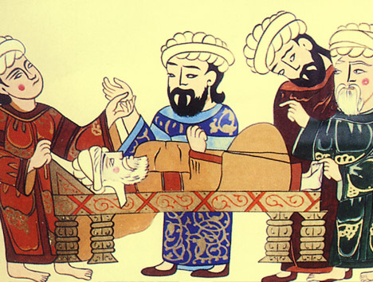
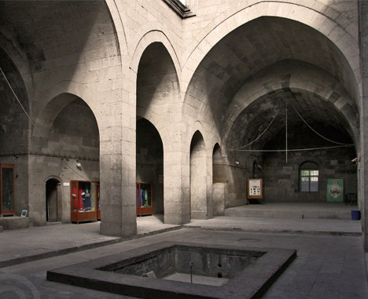

Selçuklu Müzesi (Gevher Nesibe Tıp Tarihi Müzesi) “Çifte Medrese” olarak da tanınan Gevher Nesibe Darüşşifası ve Gıyasiye Medresesi, Selçuklu hükümdarlarından II. Kılıçarslan’ın kızı, Gevher Nesibe Sultan’ın vasiyeti üzerine, kardeşi I. Gıyaseddin Keyhüsrev tarafından 1205-1206 yıllarında yaptırılmıştır. Sade mimarisiyle dikkat çeken külliye, Anadolu mimarlık tarihininin günümüze kalan en önemli yapılarındandır. Osmanlı Dönemi’nde kısmen onarılmış olmasına rağmen, harap haldeyken 1960’lardan itibaren başlayan kapsamlı restorasyon çalışmaları yapılmıştır. 1980’li yıllardan itibaren Erciyes Üniversitesi tarafından Tıp Tarihi Müzesi olarak kullanılmıştır. 2012 yılında Çifte Medrese’nin kullanımının Büyükşehir Belediyesine devredilmesiyle Selçuklu Müzesi kurma çalışmaları başlamıştır. Yapıdaki başta çatı olmak üzere küçük onarımlar, müze koleksiyonunun oluşturulması, içeriğinin hazırlanması 2 yıl boyunca yoğun bir biçimde devam etmiştir. Sonunda kent için tarihsel ve imgesel değerinin yanı sıra, yerel ve evrensel kültürel mirasın da önemli bir parçası olan bu anıt eser, Büyükşehir Belediyesi tarafından, Anadolu Selçuklu dünyasını farklı yönleriyle tanıtan bir müzeye dönüştürülerek 21 Şubat 2014 tarihinde hizmete açılmıştır. |
 |
|  | Kent tarihinden yola çıkarak Anadolu ortaçağına ve Selçuklu Uygarlığı'na odaklanan müze tematik bir yaklaşımla planlanmıştır. Bir kısmında Selçuklu Medeniyeti ile ilgili uygarlığı ön plana çıkaran müze, diğer kısmı ise şifahiye özelliğini ön plana taşımaktadır. Selçuklu Uygarlığı ile ilgili olan kısımda; 'Selçuklu Kenti', 'mimarisi', 'sanatı', 'bilimi', 'giysisi' gibi unsurlar ile 'Kayseri'de Selçuklular', 'Anadolu'da Selçuklular' gibi kısımlar yer almaktadır. Şifahiye ile ilgili kısımda ise; 'hastalıklar', 'tedavi yöntemleri ve aletleri', 'bilginler', 'ecza', 'su ve sağlık', 'müzik ile tedavi', 'renk ile tedavi' gibi kısımlar bulunmaktadır. Müze içerisinde sergilenen Selçuklu ve yakın dönemine eserlerinin yanı sıra, etkileşimli ve teknolojik görsellik içeren alanlar yer almaktadır. Böylece ziyaretçilerimiz; dinleyerek, deneyerek, uygulayarak ve teknolojik aletleri kullanarak Selçuklu Medeniyeti hakkında bilgiler almaktadır. Ayrıca çocukların müzeyi ve Selçuklu'yu sevmesi için çocuk odamızda çizgi filmler ve çeşitli oyunlar bulunmaktadır. Yine müze içerisinde çeşitli konser ve kültürel faaliyetlerin yapılacağı mekanlar bulunmaktadır. |